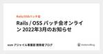

esm アジャイル事業部 開発者ブログ のフィード

技術書（英語）読書会を継続している話 3
3
esm アジャイル事業部 開発者ブログ
はじめに こんにちは、エンジニアの 9sako6 です。 昨年の夏に社内で Patterns of Enterprise Application Architecture（以下、PofEAA と呼ぶ）...
4日前

Rails / OSS パッチ会オンライン 2022年3月のお知らせ
esm アジャイル事業部 開発者ブログ
2022年3月の Rails / OSS パッチ会を 3月14日(月)に Discord でオンライン開催します。 この会をひとことでいうと、日頃のお仕事で使っている Rails をはじめとする OS...
12日前

【入社エントリ】はじめまして！ふーがと申します。
esm アジャイル事業部 開発者ブログ
はじめに はじめまして！ふーが(@fugakkbn)と申します。2022年3月1日に中途入社しました。 蒙古タンメン中本、餃子、コカコーラをこよなく愛する光の戦士です。どうぞよろしくお願いします。 入...
14日前
Emacs でだって Docker で開発したい！
esm アジャイル事業部 開発者ブログ
こんにちは。wat-aro です。 Docker 環境で開発する際に VSCode の Remote Container はとても便利ですね。 でも今まで Emacs で開発してきた人は VSCode...
21日前
Rails / OSS パッチ会オンライン 2022年2月のお知らせ
esm アジャイル事業部 開発者ブログ
2022年2月の Rails / OSS パッチ会を 2月25日(金)に Discord でオンライン開催します。 この会をひとことでいうと、日頃のお仕事で使っている Rails をはじめとする OS...
1ヶ月前
U+301C from UTF-8 to Windows-31J (Encoding::UndefinedConversionError) に対応する
esm アジャイル事業部 開発者ブログ
こんにちは。ima1zumi です。 私の開発している Rails アプリでは、Excel で読み込めるように 文字コードを Windows-31J に変換して CSV を出力する機能があります。 先...
2ヶ月前
2ヶ月間の育児休暇を取得しました
esm アジャイル事業部 開発者ブログ
こんにちは。 私は、2021年8月に妻が第1子出産をしたため、10月から2ヶ月間の育児休暇を取得しました。 男性の育児休暇取得は、所属のアジャイル事業部で初とのことで、育児休暇をテーマに記事にしてみま...
2ヶ月前
Rails / OSS パッチ会オンライン 2022年1月のお知らせ
esm アジャイル事業部 開発者ブログ
2022年1月の Rails / OSS パッチ会を 1月19日(水)に Discord でオンライン開催します。 この会をひとことでいうと、日頃のお仕事で使っている Rails をはじめとする OS...
2ヶ月前
CI fail は突然に ～CircleCI の cimg が compose v2 を使うようになって～
esm アジャイル事業部 開発者ブログ
メリークリスマス！ yucao24hours です。 こちらがおそらく 2021 年最後のアジャイル開発ブログとなります（予定）。今年も一年、私たちのブログに目を通していただきありがとうございました。...
3ヶ月前
Railsアプリケーションでフロントエンドのパフォーマンス改善:初歩編
esm アジャイル事業部 開発者ブログ
この記事は ESM Advent Calendar 2021 - Adventar の21日目の記事です。 こんにちは、swamp09です。 とあるRailsアプリケーション開発プロジェクトで、フロン...
3ヶ月前
Rails / OSS パッチ会オンライン 2021年12月のお知らせ
esm アジャイル事業部 開発者ブログ
【重要】Rails/OSS パッチ会で運用していた Idobata ルームは閉鎖されました。本記事で言及している Discord へ引越しをお願いします。 2021年12月の Rails / OSS ...
3ヶ月前
red-datasets の使い方と利用できるデータセットを調べてみた
esm アジャイル事業部 開発者ブログ
この記事は、ESM Advent Calendar 2021 10日目の記事です。 adventar.org はじめに red-datasets の使い方 ダウンロード先について データセットの種類 ...
3ヶ月前
自作キーボードの魅力と PRK Firmware
esm アジャイル事業部 開発者ブログ
こんにちは、@kasumi8pon です。 この記事は、PRK Firmware Advent Calendar 2021 と ESM Advent Calendar 2021 9日目の記事です。 わ...
3ヶ月前
集中する技術
esm アジャイル事業部 開発者ブログ
こんにちは。@color_box です。 この記事は、ESM Advent Calender 2021 の8日目の記事です。 みなさん集中できてますか？ ついついTwitterとか見てませんか？ 私は...
3ヶ月前
After "Hello, World!"、何書いてますか？
esm アジャイル事業部 開発者ブログ
こんにちは。@junk0612 です。 この記事は、ESM Advent Calender 2021 の4日目の記事です。 前置き 12月、師走になりました。界隈ではアドベントカレンダーが盛り上がり、...
4ヶ月前
ソフトウェア受託会社の営業がお客様へ最初に質問すること（あるいは、永和システムマネジメントアジャイル事業部にお仕事を依頼されたいときにご一読いただきたいこと）
esm アジャイル事業部 開発者ブログ
この記事は「ESM Advent Calendar 2021」の2日目の記事です。 adventar.org こんにちは、平田です。アジャイル事業部の Ruby x Agile グループにお仕事の依頼...
4ヶ月前
個人開発中に見た不可解な挙動を調べたらHTML Living Standardに行き着いた話
esm アジャイル事業部 開発者ブログ
こんにちは @color_box です。 個人開発中に遭遇した疑問を調べていたら、HTMLのLiving Standardに行き着いた話について書きます。
4ヶ月前
Turing Completeで学ぶデジタル回路設計
esm アジャイル事業部 開発者ブログ
こんにちは。永和システムマネジメントの内角低め担当、はたけやまです。 今回は、11月前半の私の可処分時間の全てを注ぎ込んだパズルゲーム「Turing Complete」を紹介します。 Turing C...
4ヶ月前
Problem が倒せない
esm アジャイル事業部 開発者ブログ
こんにちは、悟空体験アクションRPG を楽しんでる nsgc です。 去年の今頃、Continuous KPTA について紹介しましたが、 KPTA をしていて、いつまでも Problem が残り続け...
4ヶ月前
Rails / OSS パッチ会オンライン 2021年11月のお知らせ
esm アジャイル事業部 開発者ブログ
【重要】Rails/OSS パッチ会で運用していた Idobata ルームは近日閉鎖されます。本記事で言及している Discord へ引越しをお願いします。 2021年11月の Rails / OSS...
4ヶ月前
【ご案内】Rails/OSSパッチ会をDiscordに会場変更しました
esm アジャイル事業部 開発者ブログ
【重要】2021年11月中旬に Rails/OSS パッチ会で運用している Idobata の ルームは閉鎖されます。本記事で案内されている Discord へ引越しをお願いします。 Rails/OS...
5ヶ月前
いつもと違うプログラミングの風景を見に行く
esm アジャイル事業部 開発者ブログ
昨年、「プログラミング多言語主義」という記事を書きました。 それを踏まえて。 ふだんと違うプログラミング言語を使ったとき、実際にどんな風景が見えるのか、それ見に行こう… というのが、今回の記事の表のテ...
5ヶ月前
Rails / OSS パッチ会オンライン 2021年10月のお知らせ
esm アジャイル事業部 開発者ブログ
2021年10月の Rails / OSS パッチ会を 10月28日(木)にオンライン開催します。 この会をひとことでいうと、日頃のお仕事で使っている Rails をはじめとする OSS への ups...
5ヶ月前
『Kaigi on Rails 2021』に Gold スポンサーとして協賛します
esm アジャイル事業部 開発者ブログ
いよいよ今週末の22日（金）、23日（土）の2日間、 Kaigi on Rails 2021 が開催されます。 kaigionrails.org 永和システムマネジメントでは、 Gold スポンサーと...
5ヶ月前
『中高生国際Rubyプログラミングコンテスト in Mitaka』をシルバースポンサーとして協賛します
esm アジャイル事業部 開発者ブログ
これからの社会を担っていくことになる世代に向けての Ruby プログラミングコンテストである『中高生国際Rubyプログラミングコンテスト in Mitaka』をシルバースポンサーとして協賛します。 w...
5ヶ月前
スペルチェッカーによる自動化のすすめ
esm アジャイル事業部 開発者ブログ
さて、ひとめで以下のおかしな点がわかるでしょうか？ Fix a false positive for Layout/ClosingParenthesisIndentation when using k...
5ヶ月前
『エクストリームプログラミング実践者の集い』イベントをオンライン開催します
esm アジャイル事業部 開発者ブログ
『XP祭り 2021』に登壇したアジャイル事業部メンバーのリアルタイム再演イベントとして、『エクストリームプログラミング実践者の集い』を開催します。 2021年10月25日(月) から 10月29日(...
5ヶ月前
XP祭り 2021 に登壇した弊社メンバーのスライドまとめ
esm アジャイル事業部 開発者ブログ
2021年9月18日(土) にオンライン開催した XP祭り 2021 の弊社メンバーのスライドまとめです。 xpjug.connpass.com @hiranabe 『自分のしたい、から、みんなのした...
6ヶ月前
Rails / OSS パッチ会オンライン 2021年9月のお知らせ
esm アジャイル事業部 開発者ブログ
2021年9月の Rails / OSS パッチ会を 9月30日(木)にオンライン開催します。 この会をひとことでいうと、日頃のお仕事で使っている Rails をはじめとする OSS への upstr...
6ヶ月前
Railsでポリモーフィック関連を使った話（理由、必要な作業、注意点）
esm アジャイル事業部 開発者ブログ
こんにちは、アジャイル事業部 9sako6 です。 私のいるプロジェクトで大きなエンハンスが行われ、その中で Polymorphic Association（ポリモーフィック関連） を使う場面がありま...
6ヶ月前